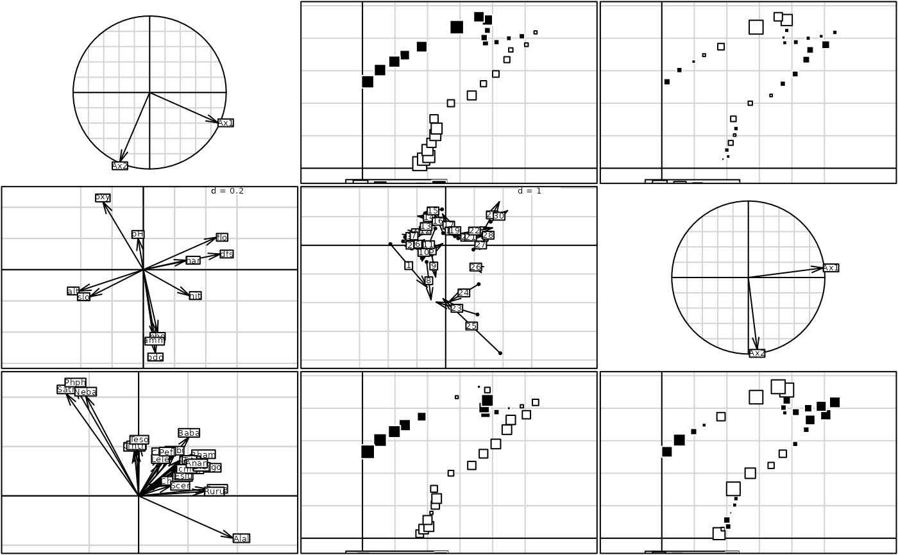

Pair of Ecological Tables
doubs.RdThis data set gives environmental variables, fish species and spatial coordinates for 30 sites.
Usage
data(doubs)Format
doubs is a list with 4 components.
- env
is a data frame with 30 rows (sites) and 11 environmental variables.
- fish
is a data frame with 30 rows (sites) and 27 fish species.
- xy
is a data frame with 30 rows (sites) and 2 spatial coordinates.
- species
is a data frame with 27 rows (species) and 4 columns (names).
Details
The rows of doubs$env, doubs$fish and doubs$xy are 30 sites along the Doubs, a French and Switzerland river.
doubs$env contains the following variables:
dfs - distance from the source (km * 10),
alt - altitude (m),
slo (\(\ln(x + 1)\) where x is the slope (per mil * 100),
flo - minimum average stream flow (m3/s * 100),
pH (* 10),
har - total hardness of water (mg/l of Calcium),
pho - phosphates (mg/l * 100),
nit - nitrates (mg/l * 100),
amm - ammonia nitrogen (mg/l * 100),
oxy - dissolved oxygen (mg/l * 10),
bdo - biological demand for oxygen (mg/l * 10).
doubs$fish contains the abundance of the following fish species: Cottus gobio (Cogo), Salmo trutta fario (Satr),
Phoxinus phoxinus (Phph), Nemacheilus barbatulus (Neba), Thymallus thymallus (Thth), Telestes soufia agassizi (Teso),
Chondrostoma nasus (Chna), Chondostroma toxostoma (Chto), Leuciscus leuciscus (Lele), Leuciscus cephalus cephalus (Lece),
Barbus barbus (Baba), Spirlinus bipunctatus (Spbi), Gobio gobio (Gogo), Esox lucius (Eslu),
Perca fluviatilis (Pefl), Rhodeus amarus (Rham), Lepomis gibbosus (Legi), Scardinius erythrophtalmus (Scer),
Cyprinus carpio (Cyca), Tinca tinca (Titi), Abramis brama (Abbr), Ictalurus melas (Icme),
Acerina cernua (Acce), Rutilus rutilus (Ruru), Blicca bjoerkna (Blbj), Alburnus alburnus (Alal),
Anguilla anguilla (Anan).
doubs$species contains the names of the 27 fish species. The four columns correspond to: 1 = scientific name (Genus species), 2 = French common name, 3 = English common name, 4 = Four character code.
Source
Verneaux, J. (1973) Cours d'eau de Franche-Comté (Massif du Jura). Recherches écologiques sur le réseau hydrographique du Doubs. Essai de biotypologie. Thèse d'état, Besançon. 1--257.
References
See a French description of fish species at http://pbil.univ-lyon1.fr/R/pdf/pps047.pdf.
Chessel, D., Lebreton, J.D. and Yoccoz, N.G. (1987) Propriétés de l'analyse canonique des correspondances. Une illustration
en hydrobiologie. Revue de Statistique Appliquée, 35, 4, 55--72.
Examples
data(doubs)
pca1 <- dudi.pca(doubs$env, scan = FALSE)
pca2 <- dudi.pca(doubs$fish, scale = FALSE, scan = FALSE)
coiner1 <- coinertia(pca1, pca2, scan = FALSE)
if(adegraphicsLoaded()) {
g1 <- s.corcircle(coiner1$aX, plot = FALSE)
g2 <- s.value(doubs$xy, coiner1$lX[, 1], plot = FALSE)
g3 <- s.value(doubs$xy, coiner1$lX[, 2], plot = FALSE)
g4 <- s.arrow(coiner1$c1, plot = FALSE)
g5 <- s.match(coiner1$mX, coiner1$mY, plot = FALSE)
g6 <- s.corcircle(coiner1$aY, plot = FALSE)
g7 <- s.arrow(coiner1$l1, plot = FALSE)
g8 <- s.value(doubs$xy, coiner1$lY[, 1], plot = FALSE)
g9 <- s.value(doubs$xy, coiner1$lY[, 2], plot = FALSE)
G <- ADEgS(list(g1, g2, g3, g4, g5, g6, g7, g8, g9), layout = c(3, 3))
} else {
par(mfrow = c(3, 3))
s.corcircle(coiner1$aX)
s.value(doubs$xy, coiner1$lX[, 1])
s.value(doubs$xy, coiner1$lX[, 2])
s.arrow(coiner1$c1)
s.match(coiner1$mX, coiner1$mY)
s.corcircle(coiner1$aY)
s.arrow(coiner1$l1)
s.value(doubs$xy, coiner1$lY[, 1])
s.value(doubs$xy, coiner1$lY[, 2])
par(mfrow = c(1, 1))
}
